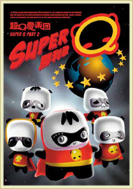
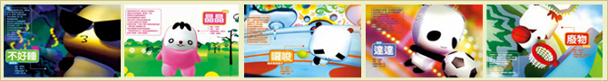

 2008年，熊猫基地与中国台湾音乐人许常德先生合作，为成都大熊猫定制 了代言歌曲《超口爱》。当年4月，经基地特许授权的由大熊猫“晶晶”、“废 物”、“罗嗦”、“不好睡”和“达达”五只三维虚 拟熊猫组成的超口爱乐团 带着它们的音乐专辑《超口爱行大运》来到成都，在基地举行了超口爱大熊猫 玩偶的中国内地首发仪式。这让大熊猫不仅有了世界上第一张熊猫唱片《超口 爱行大运》，还自创了熊猫操、熊猫歌，以卡通的形象风靡成人世界。该专辑 在台湾地区的销售量仅一个月就达到一万张，达到了良好的宣传效应。超口爱 动漫玩具的顺利诞生也标志着基地已经初步形成了公众教育与大熊猫研究保护 结合、濒危物种保护与社会公益结合的格局，摆脱了过去单一的保护模式，创 新了一个熊猫保护与大熊猫文化品牌开发协调发展的成功模式。

制作者:王旭 邮箱：847346005@qq.com 微博联系